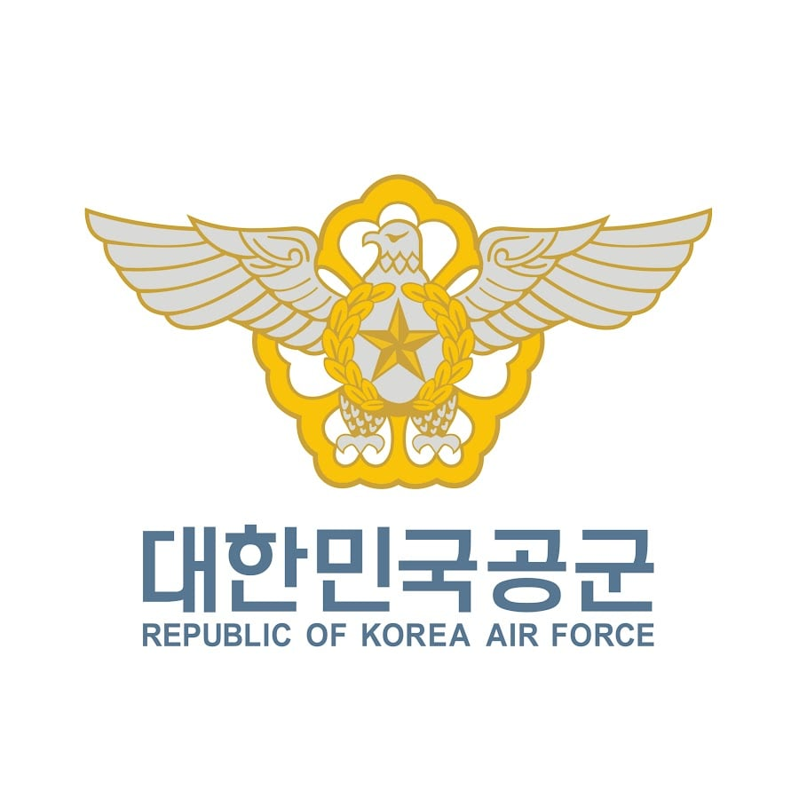
대한민국 공군
별명은 에어공익
유격, 행군, 혹한기 같이 좆같은 훈련이 없고 부대 위치도 대부분 준수하며 특기와 자대는 본인의 노력여하에 따라 고를 수 있는 자유가 있다
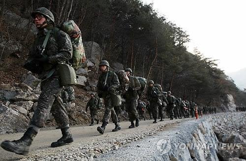
육군 출신 : 씨발 군인이 유격 행군 혹한기 안하면 뭐함??? 저 새끼들 군인 맞음??
육군 출신들은 공군이 유격/행군/혹한기 같은 훈련을 안한다는 것에 의문을 가질 수도 있다
이는 육군과 공군의 전시 역할을 잘모르기 때문에 생기는 일이다
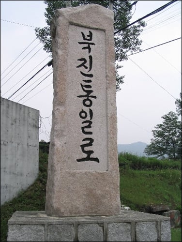
전쟁이 발생하면 육군은 다양한 역할을 수행하게 된다
북진 / 주요 거점 방어 / 치안 유지 / 점령지 주둔 등등...
대부분 기존에 있던 부대를 떠나서 수행하는 임무들이다
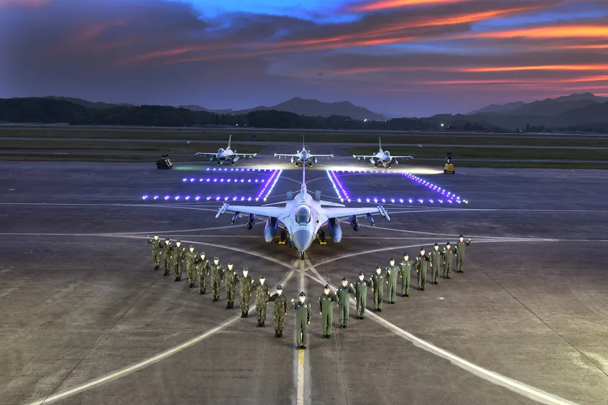
반대로 공군은 전쟁이 발생해도 소속 되어있는 비행단을 떠나지 않는다
비행단은 적 입장에서 최우선 타격시설이고 1순위로 공격/포격/공습을 당할 시설이다
즉, 공군 병력들은 비행단을 떠날 이유가 없고 목숨 걸고 이곳을 지켜야한다
유격이나 행군을 하지 않는 이유가 바로 여기에 있다
부대를 떠날 일이 없는데 유격과 행군이 무슨 소용인가?
참고로 실제로 전쟁이 일어나면 가까운 육군부대가 공군 비행단을 지키러 지원을 온다
그만큼 중요한 시설이기 때문이다
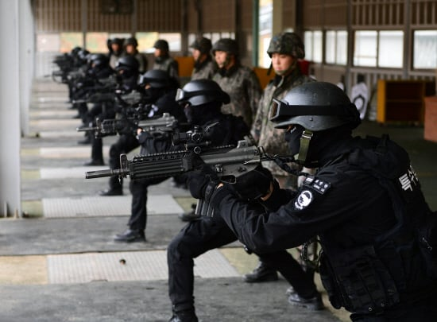
??? : 그럼 씨발 대체 무슨 훈련함?
당연히 기지를 지키는 훈련을 한다
공군 출신이라면 모를 수가 없는 '기지방호' 훈련이다
적이 비행단에 침투하거나 공습하는 상황을 가정해서 시행하는 훈련이긴한데 사실 빡세진 않고 그냥 늦게 퇴근하는게 좆같다
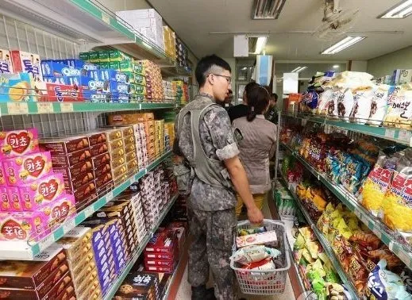
참고로 육군은 군내 마트를 PX라 부르지만 공군은 BX라 부른다
Base라서 BX 맞다
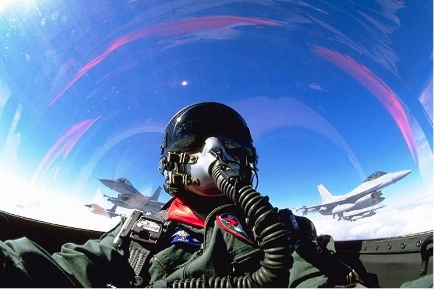
??? : 그럼 공군은 빡세게 훈련하는 인간들이 없냐??
당연히 있다
공군의 주인공인 파일럿들이다
2026년 현재도 구타와 욕설이 있다고 전해질 정도로 빡세다
한번의 실수가 죽음으로 이어질 수 있는 직종인만큼 군기도 빡세고 훈련도 엄청 빡세다
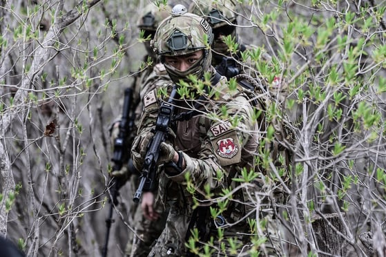
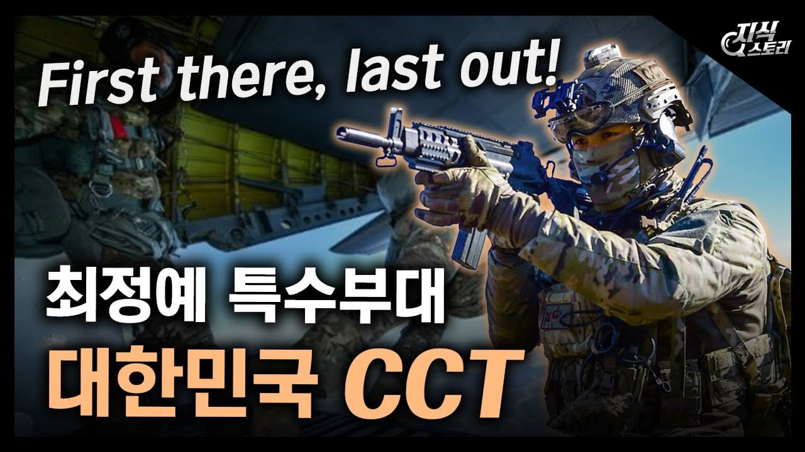
파일럿말고 부사관 쪽으로 가면 구조사(SART)와 공정통제사(CCT)도 있다
특수부대인만큼 개빡세게 훈련하는 걸로 유명하다
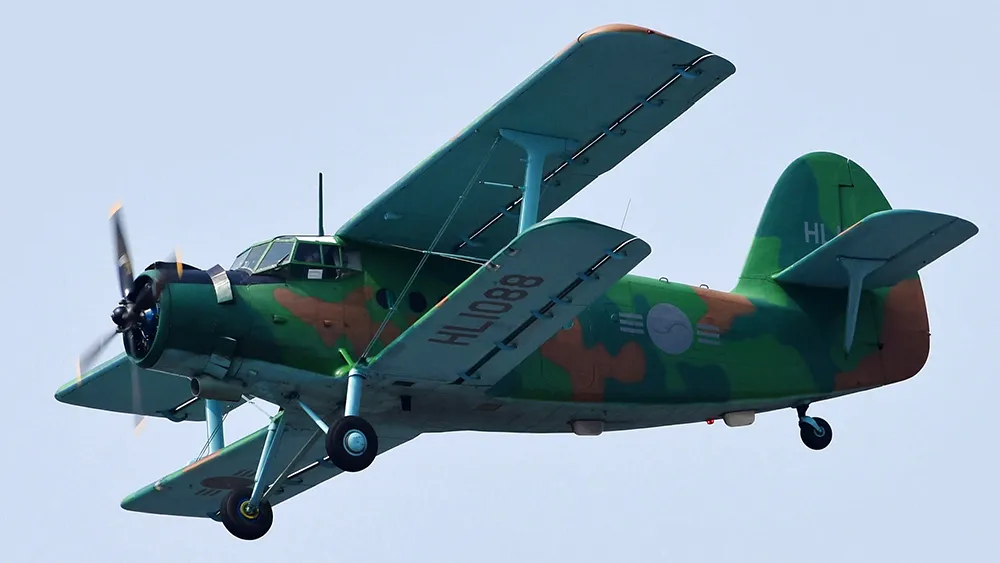
그리고 부사관이 비행기를 조종하는 28전대도 있다
사진속의 비행기인 안둘기를 모는 항공사 특기 부사관들의 부대다
사실 여긴 대부분 공군인들도 존재조차 모를 것이다
대신 여기 출신 사람들 말들어보면 비행기 조종하는만큼 빡세다고하다
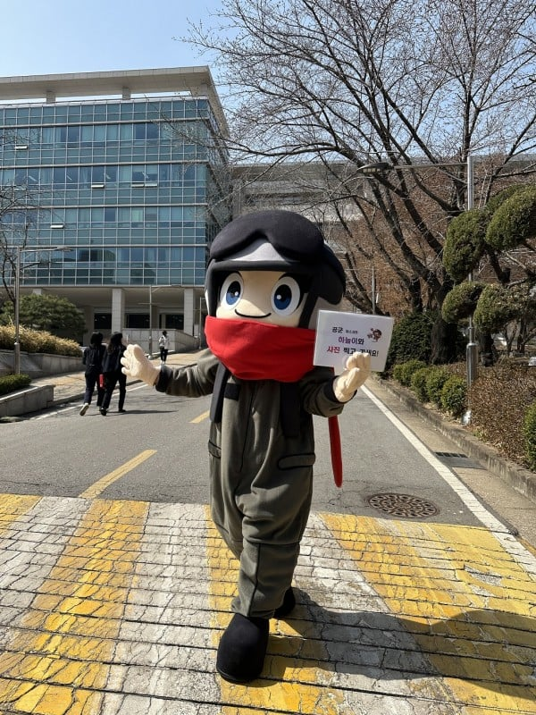
사실 위에서 말한 특수한 예시를 제외한 나머지 99%는 빡센 훈련이 없는 게 맞다
그리고 그 이유는 위에서 말한 것처럼 전시에는 기지를 지키는 게 주요임무이기 때문이다
평시에는 육군처럼 훈련 자체가 일과인게 아니라 자기 특기/보직에 맞는 일을하머 부대가 돌아가게 운영 업무를 한다
이걸로 타군 출신들은 공군이 왜 빡센 훈련을 안하는가에 대한 궁금점이 풀렸으면 한다
어허 에어공익이라니 하늘의 신사!